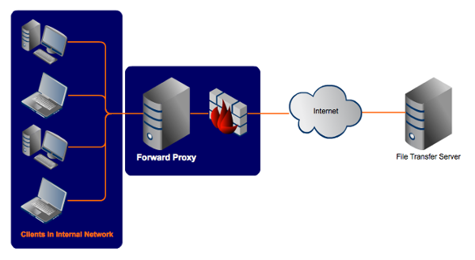

Le protocole HTTP
ISEN Brest - CIR1
- HyperText Transfer Protocol (création 1990)
- Définit dans les RFC 1945 (HTTP 1.0), 2068 et 2616 (HTTP 1.1)
- RFC 7540 pour le HTT/2.0 en 2015
- Fonctionnement Client/Serveur en mode Requête/Réponse
- HTTPS : Variante sécurisée utilisant SSL
Gestion des types
- Client doit connaître le décodeur permettant de visualiser la ressource
- Transmission de méta-données
- Type (utilisation de MIME)
- Encodage du document (charsets)
- Formatage du document (compression)
Encodage de caractères
Avant
| Language | charset |
|---|---|
| French (fr) | iso-8859-1, windows-1252 |
| English (en) | iso-8859-1, windows-1252 |
| Arabic (ar) | iso-8859-6 |
| Russian (ru) | koi8-r, iso-8859-5 |
| ... | ... |
Désormais
UTF-8 !
UTF-8
- conjointement avec la norme ISO/CEI 10646
- Géré par le Consortium Unicode (association à but non lucratif)
- Attribution d’un numéro unique à tout caractère utilisé dans une langue
- Encodage : UTF-8, UTF-16 , UTF-32
UTF-8
| Représentation binaire UTF-8 | Signification |
|---|---|
0xxxxxxx |
1 octet codant 1 à 7 bits (ASCII) |
110xxxxx 10xxxxxx |
2 octets codant 8 à 11bits |
1110xxxx 10xxxxxx 10xxxxxx |
3 octets codant 12 à 16 bits |
11110xxx 10xxxxxx 10xxxxxx 10xxxxxx |
4 octets codant 17 à 21 bits |
Fin de ligne
| OS | Caractère | ASCII | Représentation |
|---|---|---|---|
| Windows | CRLF |
0x0D,0x0A |
\r\n |
| Unix | LF |
0x0A |
\n |
| MAC (avant macOS) | CR |
0x0D |
\r |
URL
Le sigle URL (de l'anglais Uniform Resource Locator, littéralement « localisateur uniforme de ressource »), auquel se substitue informellement l'expression adresse web, désigne une chaîne de caractères utilisée pour adresser les ressources d'internet : document HTML, image, son, forum Usenet, boîte aux lettres électronique, entre autres. Les URL constituent un sous-ensemble des identifiants uniformisés de ressource (URI). La syntaxe d'une URL est décrite dans la RFC 39861.

Type MIME
Présentation
- Multipurpose Internet Mail Extension (1991 par Bell Communications)
- Initialement créé pour le protocole SMTP (ne fonctionnait que pour du texte codé en ASCII-7 bits uniquement anglais...)
- Permet de typer les documents transférés en HTTP
- Permet de d’échanger des données :
- Textuelles utilisant un codage différent
- Binaires : images, sons, films, programmes,...
En-tête
- MIME-Version : Identifie le message au format MIME (1.0 est l'identification du niveau standard actuel)
- Content-Type : Spécifie les types, sous-types et paramètres optionnels de chaque partie du message
- Content-Transfer-Encoding : Définit l’encodage utilisé dans le corps du message
- Content-ID (optionnel) : Attribue un identificateur unique à chaque partie du message
- Content-Description (optionnel) : Permet de spécifier un commentaire attaché à chaque partie
Types
Renseigné dans l’en-tête Content-Type
- Content-type: type_mime_principal/sous_type_mime (Ex : Content-type: image/gif)
- Liste : http://www.iana.org/assignments/media-types/
Types principaux
- text : données textuelles lisibles (text/plain ; text/html )
- image : données binaires représentant des images numériques (image/jpeg ; image/gif ; image/png)
- audio : données numériques sonores (audio/basic ; audio/wav)
- video : données vidéos (video/mpeg )
- application : données binaires autres (application/octet-stream ; application/pdf )
- multipart : pour les messages composites
Gestion de l'acheminement
Gestion des caches
- Passage par des relais (routeurs, proxy,...)
- Protocole informe les éléments réseaux sur d’éventuelles réactions souhaitées
Gestion des redirections
- Réorganisation des informations du Web
- Protocole garde des informations sur ces évolutions
Notion d'entités
- Protocole permettant de transporter des entités document
- Un message est composé de :
- Un en-tête d’entité (méta-informations sur le contenu et la transmission)
- Un corps d’entité (le contenu)
- Plusieurs entités peuvent être transportées par le même message (format multipart)
Fonctionnement
Connexion au serveur
- Standard : port 80 en TCP
- Sécurisé : port 443 en TCP
Système de fichiers (serveur)
- Définition d’un répertoire racine (voir configuration) : souvent /var/www/html par défaut
- Le reste du système de fichiers n’est pas accessible (configuration du serveur inclus)
Requêtes/Réponses
| Requêtes | Réponse | Description | |
|---|---|---|---|
| Ligne de commande | Ligne de status | ||
| En-têtes | En-tête générique | En-tête générique | transaction |
| En-tête requête | En-tête réponse | spécifique | |
| En-tête entité | En-tête entité | contenu de la transaction | |
| Séparateur | CRLF | CRLF | |
| Corps du message | Corps du message |
En-têtes
- Renseignements sur le client, le serveur, la transaction ou son contenu
- Ignorés en cas d’erreur… réduit les risques de « plantage »
- Pas d’ordre dans l’apparition
- Insensibles à la casse
En-têtes génériques
| Nom du champ | Description |
|---|---|
| Cache-Control | Politique de cache pour la ressource |
| Connection | Type de connexion (closeconnexion fermée après la réponse ; keep-aliveconnexion persistante) |
| Date | Date de génération du message |
| Pragma | Spécification des comportements aux serveurs intermédiaires |
| Transfer-Encoding | Spécification de l’encodage de transfert (chunked ou rien…) |
| Upgrade | Spécification des protocoles supportés par le client |
| Via | Intermédiaires par lesquels est passée le message |
En-têtes entité
| Nom du champ | Description |
|---|---|
| Allow | Liste les méthodes (ou commandes) autorisées |
| Content-Encoding | Encodage utilisé pour la ressource (lien avec Content-Type) |
| Content-Language | Langue utilisée |
| Content-Length | Longueur du corps du message en octets |
| Content-Type | Type de ressource (type MIME) |
| Expires | Date d’expiration de la ressource |
| Last-Modified | Date de dernière modification de la ressource |
Requêtes
Structure
| Requête | Syntaxe |
|---|---|
| Ligne de commande | Commande URL Version de protocole |
| En-tête générique | Titre: valeur1 ; valeur2 ; … |
| En-tête requête | … |
| En-tête entité | … |
| CRLF | |
| Corps du message | Texte |
Exemple
GET /machin/truc.html HTTP/1.1
Host: localhost:8080
User-Agent: Mozilla/5.0 (Windows NT 10.0; Win64; x64; rv:57.0) Gecko/20100101 Firefox/57.0
Accept: text/html,application/xhtml+xml,application/xml;q=0.9,*/*;q=0.8
Accept-Language: fr,fr-FR;q=0.8,en-US;q=0.5,en;q=0.3
Accept-Encoding: gzip, deflate
Connection: keep-alive
Upgrade-Insecure-Requests: 1
Commandes
HTTP 1.0
- GET : demande le contenu et les méta-informations de la ressource située à l’URL spécifiée
- HEAD : demande les méta-informations de la ressource située à l’URL spécifiée
- POST : envoi de données (ex : formulaire) à traiter par la ressource située à l’URL spécifiée
HTTP 1.1
- OPTIONS : interroge le serveur sur ses capacités de prise en charge de HTTP
- TRACE : affiche les en-têtes reçu par le serveur (permet de connaître les intermédiaires proxies, passerelles, firewall,…)
- DELETE : supprime la ressource spécifiée par l’URL (!! Sécurité !!)
- PUT : déposer des données sur le serveur à l’URL spécifié (!! Sécurité !!)
- CONNECT : demande de création d’un tunnel de communication (proxies uniquement)
Tests avec telnet : #telnet @serveur 80
-
GET
GET / HTTP/1.1 Host: domain.fr -
GET
HEAD / HTTP/1.1 Host: domain.fr
Tests avec telnet : #telnet @serveur 80
-
OPTIONS
OPTIONS / HTTP/1.1 Host: domain.fr -
TRACE
TRACE / HTTP/1.1 Host: domain.fr
Tests en ligne http://websniffer.cc
En-têtes
| Nom du champ | Description |
|---|---|
| Accept | Type de contenu accepté par le navigateur (type MIME) |
| Accept-Charset | Jeux de caractères acceptés |
| Accept-Encoding | Types de transformation (compression) acceptés |
| Accept-Language | Langues acceptées |
| Cookie | Envoi au serveur les cookies (si plusieurs : séparés par ;) |
| From | Mail du client (nécessite accord) |
En-têtes
| Nom du champ | Description |
|---|---|
| Host | Nom du domaine de destination (serveurs hébergeant plusieurs sites à la même adresse IP) |
| If-Modified-Since | Requête conditionnelle sur la date de dernière modification (ne renvoie la page qu’en cas de changement) |
| Range | Partie de la ressource demandée souvent en octets (transaction partielle) |
| Referer | URL du lien à partir duquel la requête a été effectuée |
| User-Agent | Chaîne donnant des informations sur le client, comme le nom et la version du navigateur, du système d'exploitation |
Corps
- PUT : contenu du fichier
- POST : contenu d’un formulaire HTML
variable=valeur&variable2=valeur2
Réponse
Structure
Plusieurs réponses possibles pour une requête
| Réponse | Syntaxe |
|---|---|
| Ligne de statut | Version de protocole Code-réponse Texte-réponse |
| En-tête générique | Titre: valeur1 ; valeur2 ; … |
| En-tête requête | … |
| En-tête entité | … |
| CRLF | |
| Corps du message | Texte |
Exemple
Requète
HEAD / HTTP/1.1
Host: www.isen.fr
Exemple
Réponse
HTTP/1.1 200 OK
Date: Tue, 30 Jan 2018 14:27:32 GMT
Server: Apache
X-Powered-By: PHP/5.6.22
Link: Codes de retour
| Code | Signification |
|---|---|
1xx |
Information |
2xx |
Succès |
3xx |
Redirection |
4xx |
Erreur client |
5xx |
Erreur serveur |
Codes de retour
En-têtes
| Nom du champ | Description |
|---|---|
| Accept-ranges | Acceptation des requêtes Range par le serveur et choix de l’unité de mesure (souvent octet) |
| Content-ranges | Réponse sur la partie demandée + poids total |
| Location | Redirection vers un autre URI (ex : Status-Code: 3xx) |
| Server | Type du serveur web répondant à la requête |
Corps
contenu (par exemple page web) en cas de
200 OK
Transactions partielles
- Echange d’une partie de la ressource
- Par exemple pour un document PDF : demande du transfert page par page, possibilité de visualiser le début du document avant la fin du transfert global
- En-têtes : Range; Accept-ranges, Content-ranges
Exemple
Requète
GET /articles/http.zip HTTP/1.1
Host: developpez.com
Range: bytes=100-1000
Exemple
Réponse
HTTP/1.1 206 Partial Content
Date: Wed, 10 Jun 2009 18:50:59 GMT
Server: Apache/2.2.11
Accept-ranges: bytes
Content-range: bytes 100-1000/3258
Content-type: application/zip
Content-length: 900
{ contenu binaire de 900 octets de longueur }
Négociation de contenu
Présentation
- Client : expression de ses capacités
- Serveur : choix de la ressource la plus adéquate
- Facteur de qualité : orientation des choix
Types de spécifications possibles
- Langue
- Type MIME
- Charset (encodage de caractères)
- Encodage (compression,...)
Proxy
Serveur proxy (mandataire, bastion) : intermédiaire sur le réseau permettant de relayer des requêtes
Rôle
- Mémoire cache : économie de ressources
- Filtrage : réquêtes ou réponses
- Journalisation
- Sécurité
- Authentification
- Balance de charge
- Préchargement
- Transcodage
Forward proxy
Reverse proxy
Mise en place côté client
Plusieurs méthodes :
- Configuration manuelle
- Script Proxy Auto Configuration
- Proxy d’interception (reroutage des requêtes vers le proxy)
Cache
Enregistrement temporaire d’une copie des données d’une ressource sur une machine intermédiaire
Objectifs
- Réduire la latence (rapidité de chargement)
- Réduire la bande passante consommée
- Réduire la charge sur le serveur proposant la ressource
Types
- Privés : intégré au navigateur Web
- Publics : proxys
Fonctionnement
Dépend des paramètres :
- Code de réponse
- Type de requête
- En-têtes : Expires, Cache-Control et Pragma
- Présence ou non d’un mécanisme d’authentification
Méthodes de requête :
- GET : "Cachable " par défaut sauf si un en-tête précise le contraire
- HEAD : Non "cachable" par défaut sauf si un en-tête précise le contraire
- POST : Non "cachable" par défaut sauf si un en-tête précise le contraire
- PUT, DELETE, OPTIONS, TRACE : Cache interdit
HTTP 1.0
- Expires :
- Indique que la réponse est "cachable"
- Utilisé dans le cas où la ressource ne change pas…
- Inférieur à 1an (recommandé)
- Si la date indiquée dans le champ Expire > date indiquée dans le champ Date, revalidation de la ressource auprès du serveur qu’après expiration
- Problèmes de synchronisation des dates…
-
Last-modified et If-Modified-Since :
- Le cache interroge le serveur sur la date de dernière modification, récupère la ressource uniquement en cas de nécessité
HTTP 1.1
Cache-Control : en-tête pour requête et réponse
| Valeur | Description |
|---|---|
| private | Autorisation dle stockage par les caches privés (navigateurs) uniquement : pour les infos propres à un utilisateur (POST) |
| public | Autorise le stockage par les caches publics et privés |
| no-cache | Revalidation systématique de la ressource par le cache |
| no-store | Mise en cache interdite |
| must-revalidate | Force la revalidation… peu utilisé : problème réseau… |
| max-age | Temps relatif par rapport à la date de réponse pour calculer la date d’expiration (équivalent à Expires) |
| s-maxage | Identique à max-age mais appliqué qu’aux caches publics |
| no-transform | Transformation par le proxy interdite (compression, ré-encodage,…) |
| max-stale | Client accepte des réponses non fraiches (cas où le proxy ne peut plus atteindre le serveur) |
Fraicheur des données
- 2 mécanismes permettent de vérifier la fraicheur des données :
- Last-Modified et If-Modified-Since : date
- Etag et If-None-Match : sorte de signature du document
-
Fonctionnement :
- Pas de changement : Réponse 304 incluant une Date et un Expires
- Changement : Réponse 200 OK incluant la mise à jour
Conseil
- Utiliser Expires et Last-Modified
- Ne pas abuser de la négociation de contenu
- Eviter l’authentification HTTP : désactivation du cache…
Cookies
- Informations envoyées par un serveur HTTP à un client HTTP sous forme d’en-tête
- Stockés sous forme de fichiers texte côté client
- Renvoyés à chaque nouvelle connexion au serveur
- Durée de vie limitée, fixée par le site visité
Usage :
- Authentification
- Sessions
- Personnalisation
- Pistage
HTTPS
- le client contacte un serveur et demande une connexion sécurisée, en lui présentant un certain nombre de méthodes de chiffrage de la connexion
- le serveur répond en confirmant pouvoir dialoguer de manière sécurisée et en choisissant dans cette liste une méthode de chiffrage et surtout, en produisant un certificat garantissant qu'il est bien le serveur en question et pas un serveur pirate déguisé (on parle de l'homme du milieu).
- cela permet au client d'envoyer de manière secrète un code (une clé symétrique) qui sera mélangée à tous les échanges entre le serveur et le client de façon à ce que tous les contenus de la communication — y compris l'adresse même du site web, l'URL — soient chiffrées.
HTTP/2
Issu du protocole expérimental SPDY développé par Google
Objectifs :
- Conservation de la compatibilité avec le HTTP/1.1
- Réduction de la latence pour améliorer le temps de chargement des pages
Des questions ?